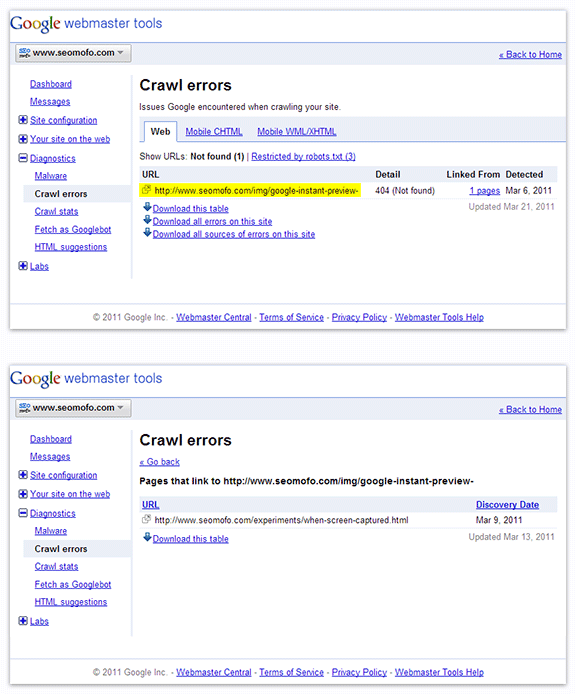

In my article, titled Advanced SEO for Affiliate Marketing Links, and the follow-up article, titled Hey, Matt Cutts, I’m using JavaScript to hide links from Google, cool?, I discuss an SEO strategy that some sheep people consider to be gray hat or even black hat SEO. The basic concept involves using JavaScript functions to create links, placing the JavaScript code in an external file, and then blocking googlebot from accessing it, using robots.txt. The end result: only your users can see your JavaScript links; Google sees plain text.
In those articles, I discussed how to use this technique in a way that improves the user experience and prevents the passing of PageRank through paid links (as is required by the Google Webmaster Guidelines). One of the things I heard from the ignorant, self-righteous fucktards naysayers of this technique was that I shouldn’t block googlebot from viewing my JavaScript code, because Google is smart enough to “figure things out” for itself.
Also, in the past I’ve asked Matt Cutts if there’s any reason why I shouldn’t Disallow googlebot from crawling external JavaScript files. In his response, he advises people NOT to block Google and says the cost in bandwidth required to serve JavaScript files to Google is insignificant.
The following example shows that both arguments (Google understands JavaScript and it doesn’t cost you anything) are flawed and confirms my recommendation to Disallow googlebot from reading your JavaScript code (regardless of what the code actually does).
The code example below is from Google Instant Previews Experiment #01 – When is the Screen Captured? It is not from an external .js file–it is defined in the page’s <head> section. In other words, this is one of the few times I let Google see some JavaScript code…and you can see for yourself just how well Google has figured it out.
function showImage(int) {
int = ((int < 10) ? "0" + int : int);
var parentID = "update" + int;
var updatePs = document.getElementById("updates").getElementsByTagName("p");
var image = document.createElement('img');
var imgID = "image" + int;
var imgURI = "/img/google-instant-preview-" + int + ".png";
var imgALT = "Google Instant Preview #" + int;
for (var i = 0; i < updatePs.length; i++) {
var imgObj = updatePs[i].getElementsByTagName("img");
if (imgObj[0]!=null){
imgObj[0].parentNode.removeChild(imgObj[0]);
}
}
image.setAttribute("id", imgID);
image.setAttribute("class", "preview-image");
image.setAttribute("src", imgURI);
image.setAttribute("width", "302");
image.setAttribute("height", "585");
document.getElementById(parentID).appendChild(image);
}
What the script actually does is it allows me to easily update that post by adding images to the rollover, using simple CSS classes/ids. But that doesn’t matter; what matters is that Google has pulled an arbitrary string from the code and is treating it like a link URL.
In other words, Google isn’t curiously testing the string to see if it’s a URL–no, Google is boldly declaring: This is definitely a URL, and I’m definitely counting it as a link, and therefore you definitely have a broken link on this page.

Bottom line: Google sucks at understanding JavaScript, and there’s a real possibility that its reckless misinterpretation of your script will end up causing damage to your website’s rankings, its crawl rate, and/or its depth of indexation.